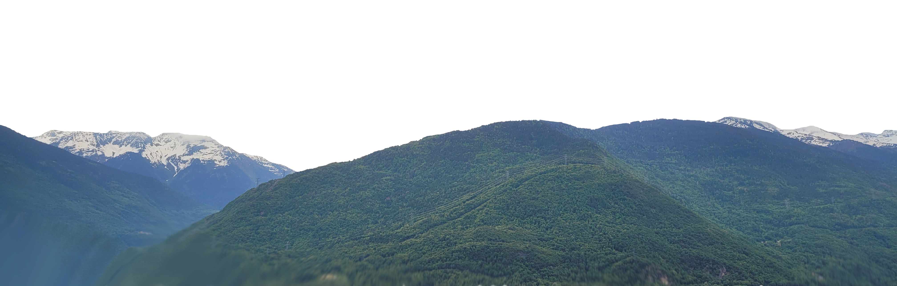
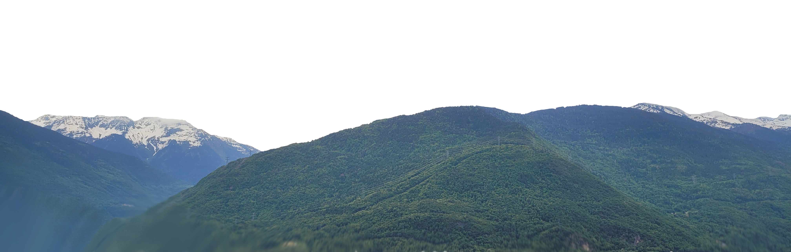
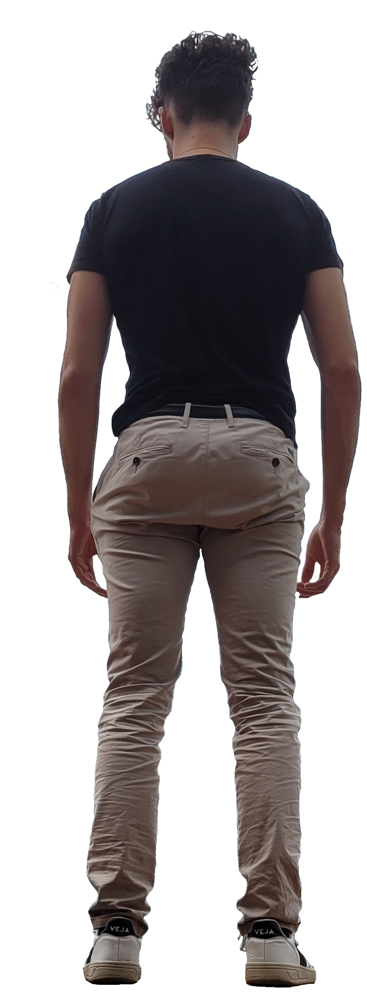
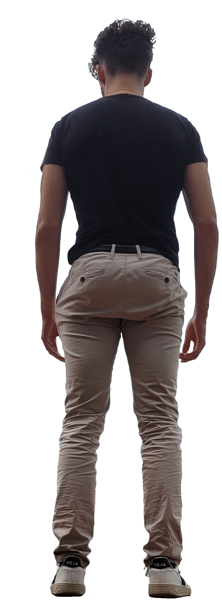

JOB OBJECTIVE
Job objective I am a second-year university student in computer science. My goal is to improve my programming skills and develop front-end and back-end skills. As an excellent designer, I can provide a new vision on websites, new creations! I am also a good developer, I can easily develop in c#, c++, c to make useful apps, games, and many other applications.
 

 


MISCELLANEOUS
- Love doing sports, like gym, 5times by week. Street Workout for 4 months
- Creating Autoit scripts to make user life easier
- Editing movies or pictures, on a YouTube Chanel (Guillian VIBERT-VALLET)
- I Enjoy socializing, and working with people.
- Driving License
- And I really love eating
MISCELLANEOUS
- Love doing sports, like gym, 5times by week. Street Workout for 4 months
- Creating Autoit scripts to make user life easier
- Editing movies or pictures, on a YouTube Chanel (Guillian VIBERT-VALLET)
- I Enjoy socializing, and working with people.
- Driving License
- And I really love eating
EXPERIENCES
Winter attraction park I supervised the ice rink, the sledges attraction.
I distributed ice skates to customers.
2018-2019 Les Amis du Cinéma (Cultural organization): Movie theatre Summer job:
- I supervised the entrance and cleaned the screening rooms
- Every morning, from 8 to 12, I cleaned the entire theatre. In the afternoon, my goal was to check the customers’ tickets (4 times a day).
- I took care of the re-fill of the vending machine.
2016-2017 Town hall (Albertville, France) Communication department Summer job:
- Wednesdays, Thursdays and Fridays: I shared a lot of flyers in the local region (Savoie)
- Mondays and Tuesdays: I worked in a medieval city with a paladin costume. I Greeted tourists and explained them how the city works and was built.
- Saturdays and Sundays: I helped the town hall organize events like the Jazz festival.
STUDIES
2018 -2020 DUT INFO IUT- University of Savoie (USMB)– Annecy-France
2-year University technical diploma in computer engineering.
Topics: Web programming, POO (programming-oriented object), database (SQL, ORACLE)
2015-2018 BACCALAUREAT TECHNOLOGIQUE STI2D SIN
High School diploma specialized in science, technology and computer engineering.
With honors. Topics: network, physic, math, engineering.